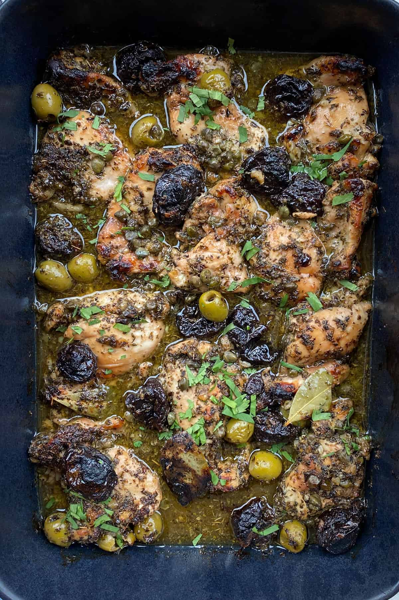

Chicken Marbella

If you're looking for a timeless, show-stopping dish that is guaranteed to impress your guests, look no further than Chicken Marbella. This iconic recipe, made famous by The Silver Palate Cookbook, has been the star of dinner parties for decades, and for good reason.
It’s an electric combination of sweet, savory, and briny flavors. Tender chicken is marinated overnight in a rich blend of garlic, oregano, capers, and green olives. But the real magic comes from the prunes, which melt into the white wine and brown sugar sauce as it bakes, creating a syrupy, complex glaze that is absolutely irresistible. Don't be fooled by its elegant results; this dish is incredibly easy to prep ahead, making it the perfect stress-free main course for any special occasion.
Ingredients
½ cup olive oil
- ½ cup red wine vinegar
- 1 ½ cups pitted prunes
- ¾ cup pitted Spanish green olives
- ½ cup capers (a 2-ounce jar), with 1 teaspoon of the juice
- 6 bay leaves
- 1 head of garlic, peeled and puréed (I use this garlic press)
- ¼ cup dried oregano
- 2 teaspoons of salt
- ¼ teaspoon freshly ground pepper
- 4 pounds of boneless skinless chicken thighs (18 or so pieces)
- 1 cup dry white wine (Vermouth works well)
- ¾ cup dark brown sugar
- ¼ cup of finely chopped flat-leaf parsley or cilantro
Instructions
- In a large mixing bowl or plastic container, combine the oil, vinegar, prunes, olives, capers, caper juice, bay leaves, garlic, oregano, salt and pepper. Add the chicken and toss to coat. Cover and marinate in the fridge overnight.
- Preheat oven to 350ºF. Arrange the chicken in a single layer in two large shallow baking dishes and spoon all the marinade ingredients on and around the chicken. Pour half the wine into each baking pan, and then sprinkle the all chicken pieces evenly with the brown sugar.
- Bake the chicken for 45-50 minutes, or until it's cooked through, basting with the pan juices after 20 minutes.
- To serve, transfer the chicken pieces to a serving platter and spoon the prunes, olives, capers and some of the sauce on and around the chicken pieces. Sprinkle with parsley or cilantro. Serve remaining sauce on the side.
Notes
- Make this with bone-in, skin-on chicken: Use 8-10 pounds of bone-in chicken parts: thighs, drumsticks, breasts or any combination. Follow the recipe exactly as written only increase the cooking time to between 50 minute and an hour, checking for doneness after 50 minutes, and basting 3 or 4 times while the chicken cooks, to keep it moist.
- Storage: Chicken Marbella can be stored in the fridge for up to 4 days in an air-tight container. Reheat it in a 350ºF oven, in a casserole dish covered tightly with foil, for 25 minutes or until heated through.
Home